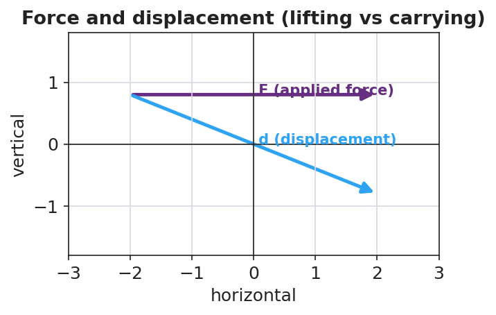

Unit: Work, Energy & Power — Lesson 01: Work
Phenomenon
Your teacher lifts a loaded backpack straight up onto a high shelf. Then your teacher carries the same backpack across the room at a steady height. Both make the arms tired — but a physicist says work was done in only one of them.

Driving Question
What does it take to do work on an object, and why can a tiring task do zero work?
Notice & Wonder
Watch the lift and the carry. Write what you notice and what you wonder.
Initial Model
Draw the backpack in each case. Draw one arrow for the force you apply and one arrow for the bag's displacement (the way it actually moves). Then predict: which case does more work on the bag — and is one of them zero?
Investigate
Slide the force, the displacement, and the angle between them. Only the part of the force along the motion does work: W = F·d·cosθ. Predict before you slide — what happens to the work when the angle reaches 90°?
Work W = F·d·cosθ = 200.0 J
Make It Make Sense
- You push a 200 N crate 3.0 m across the floor in the direction of the push. How much work do you do on the crate? Show W = F·d.
- A waiter holds a tray perfectly still for 30 seconds. How much work does he do on the tray? Explain using the word displacement.
- Why does carrying a box across a level room at steady height do zero work on the box, even though your arms get tired?
Stuck? Sentence frame
"The work is ___ J because the force pointed ___ the motion, so ___ of it counted."
Key Vocabulary (max 3)
- work — energy transferred when a force moves an object through a displacement along the force; W = F·d
- joule — the SI unit of work and energy; one joule equals one newton-meter (1 J = 1 N·m)
- displacement — the change in an object's position; only motion along the force counts toward work
Revise Your Model
Return to your two drawings. Re-label each arrow pair: is the force along the motion or perpendicular to it? Rewrite your explanation as one Because / But / So sentence using work and displacement.
Return to the Phenomenon
In one Because/But/So sentence, explain why carrying the backpack down the hall does zero work on it but lifting it onto the shelf does positive work.
Exit Ticket + Closing Reflection
- A custodian pushes a 250 N mop bucket 8.0 m across a level floor at steady speed.
(a) How much work does she do on the bucket? Show W = F·d.
(b) She then holds the bucket still for 10 seconds. How much work during those 10 seconds? Explain.
(c) A student carries a 40 N lunch tray across the cafeteria at constant height. How much work is done on the tray, and why? - Reflection: What is one thing that surprised you today? Who helped you make sense of something?